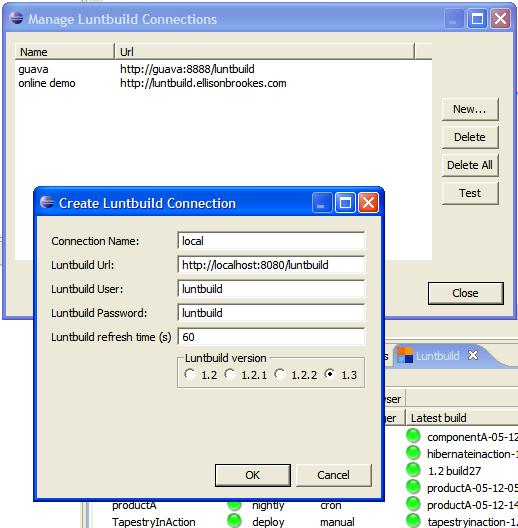

Configure Luntbuild connection(s) by clicking on (or select Connections... from view menu). The Connection Dialog will appear. Enter connection name, Luntbuild URL, Luntbuild user and password, view refresh rate and Luntbuild version.
